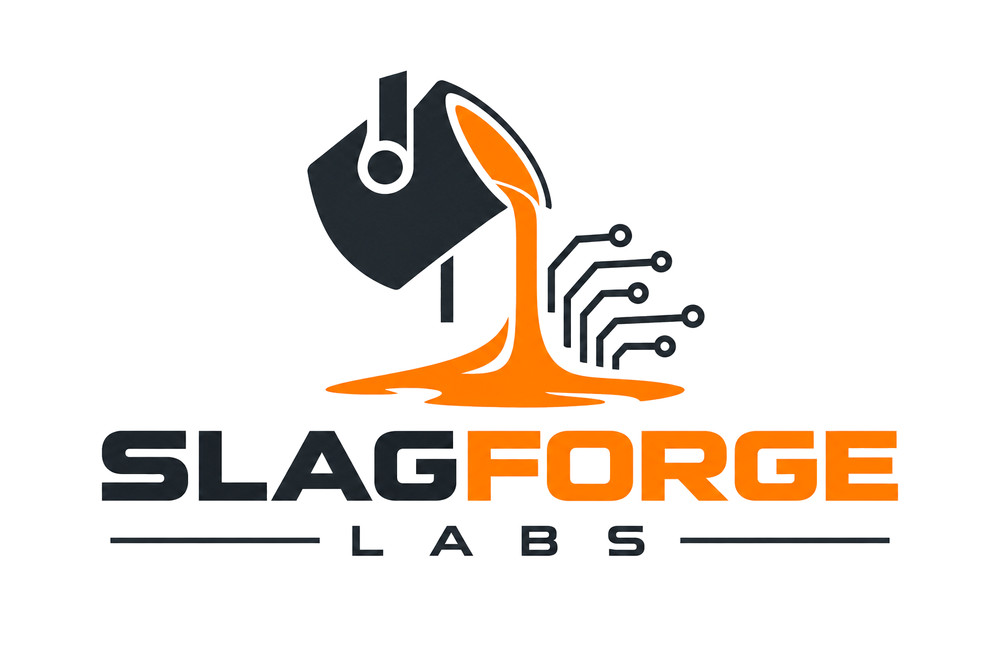

Agentic systems, scanning, and research.
Slagforge Labs is an independent technology lab working where AI, automation, and physical making meet. We test what works, build what fits, and keep it practical.
Agentic Systems
Custom AI agents and automation built around how a business actually runs. We map the real need first, then design, test, and tune systems that hold up in daily use.
Model Research
Comparative evaluation of frontier and open weight models across reasoning, tool use, and long context performance. Quantized local inference, retrieval pipelines, and private deployments scoped to the workload.
Scanning and Prototyping
In house photogrammetry scanning, reverse engineering, and 3D printed prototypes for industrial and engineering projects. From physical object to digital model and back.